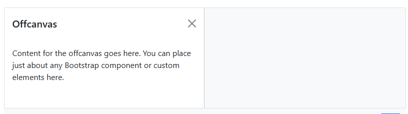

Exemplo de Barra Off canvas
Abrir Esquerda
Abrir Direita
Abrir Topo
Abrir Rodapé
Mostrar backdrop
Painel Off canvas
Um Painel Fora da página principal do lado esquerdo
Nav link 1
Nav link 2
Nav link 3
Painel Direito
Este painel abre a partir da direita. Coloque aqui menus, filtros ou qualquer conteúdo.
Opção A
Opção B
Opção C
Painel Topo
Este painel aparece a partir do topo. Use para notificações rápidas ou ações.
Painel Rodapé
Este painel surge a partir do rodapé. Pode conter informações de contexto, ações rápidas ou um resumo.
Off Canvas exposto(nn consegui implementar ele :/ ):
